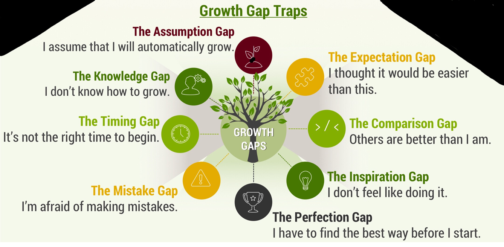

- Growth doesn't just happen. Growth is intentional.
- Each of us has the opportunity to choose growth or to be complacent with where we stand (Proverbs 1:5).
- “You cannot change your life until you change something you do every day.”,
- By learning the laws and then living them, you will be on your way to reaching your potential.
Discussion Questions
- Why must we grow?
- In what areas of your life have you seen growth in the past year?
- How do you intend to pursue growth going forward?
Seven Habits of Maturing Christians‐ (from Bible.org & Cru.org)
- In order to grow we need to eat‐ The Bible
- In order to grow we need to breathe‐ Prayer
- In order to grow we need good spiritual hygiene‐ Confession of sin.
- In order to grow we need a caring family‐ Fellowship.
- In order to grow we need regular exercise‐ Service.
- In order to grow we need protection‐ From Temptation.
- In order to grow we need to give‐ Stewardship.

